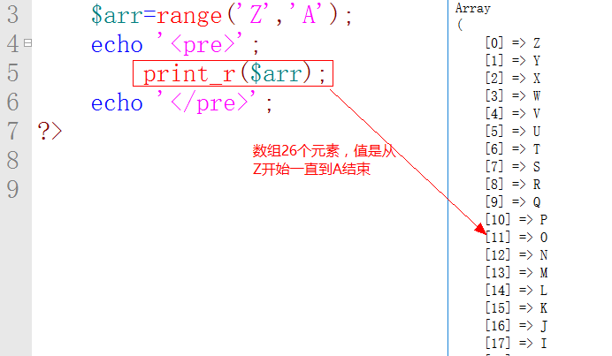

PHP常用函数大礼包
88
如果range里面的参数是数字，那么他直接按照数字大小的顺序排序，如果里面的参数是一个字符，那么他将按照ascii编码的顺序排序。

1.1.2 array_merge()数组合并
作用：将几个数组合并，然后生成一个新的数组。
如果合并数组的下标是数字，那么他会无视下标，直接生成一个新的数组，然后下标从0开始重新排序

如果合并数组的下标是字符串，那么他会保留原来的下标，合并后的数组，如果下标出现了冲突，那么后来的值会将原来的值替换。

1.1.3 array_rand()随机取出一个数组的下标

array_rand存在第二个参数，默认情况下是1，代表获取一个数组元素的下标，他的数据类型等同于下标的数据类型，但是如果一次性随机获取多个元素的下标，他返回的是一个数组。

老何有话说：虽然他是随机获取数组元素的下标，但是获取后的结果一定是小的下标放在前面而大的下标放在后面。 |
1.1.4 shuffle()打乱一个数组的排序。
老何有话说：使用shuffle打乱一个数组，不需要重新复制，它会自动将原来的数组的元素顺序打乱。 |
1.1.5 is_array()判断一个变量是否是数组。
语法： is_array(变量名)，如果是数组，返回一个true，如果不是数组，返回一个false。
1.1.6 array_search()根据数组值找下标
作用： 根据一个数组元素的值，去寻找他相对应的下标 语法： array_search(value,$arr[,boolean]) ,返回的是元素值对应的下标

array_search去遍历数组查找下标，是从左往右进行寻找，当找到第一个符合要求的元素时，直接返回下标，函数结束。

array_search去遍历数组，区分大小写
array_search默认情况下，是不区分数据类型的，如果想让其区分数据类型，将array_search的第三个参数修改为true即可。

1.2关于数组元素操作的函数
1.2.1 array_keys()获取下标返回数组
作用： 获取数组中的所有下标，返回的结果还是一个数组语法： array_keys($arr)
1.2.2 array_values()获取值返回数组
作用： 获取数组中的所有值，返回的结果还是一个数组语法： array_values($arr)

1.2.3 array_combine() 数组合并
作用： 将两个数组合并，第一个数组里元素的值被当成新数组元素的下标，第二个数组里元素的值被当成新数组元素的值。语法： array_combine($arr1,$arr2)

老何有话说：array_combine去合并两个数组，两个数组元素的数量必须是一样的。 |
1.2.4 in_array() 查找某一个数组元素的值是否存在。
语法 ： in_array(value,$arr[,boolean])。返回的是一个布尔值，如果存在，返回的是一个true，如果不存在，返回的结果是false。
默认情况下不区分数据类型，如果想区分，将第三个参数修改为true即可。

in_array区分大小写

1.2.5 array_key_exists() 是否存在某下标
作用： 查找数组元素中是否存在某个下标语法： array_key_exists($key,$arr)

区分大小写

array_key_exists只有两个参数，他不区分数据类型

1.2.6 isset() 判断一个变量是否被定义。

思考： isset()和array_key_exists()判断数组元素有什么区别？
答案： 如果一个数组元素的值为null的时候，isset()判断的结果是false而array_key_exists()判断的结果是true。

1.2.7 implode() 数组——>字符串
作用 ： 将一个数组拼接成一个字符串。语法 ： implode(string,$arr)

如果省略了拼接符，那么，他默认按照空字符串进行拼接

1.2.8 explode()字符串——>数组
作用： 将一个字符串拆分成一个数组。语法： explode(string,$str[,num])

explode如果有第三个参数，则代表将字符串拆分成几份，最后一份包含字符传后面的所有部分。

explode第三个参数如果是一个负数，那么则代表将最后的几项丢弃

1.3数组的交并差
1.3.1 array_merge() 数组合并
参见昨天代码。就是将几个数组合并成一个新数组1.3.2 array_diff() 数组差
代码的差级，计算某个数组中其他数组没有的元素。语法： array_diff($arr1,$arr2[,$arr3..$arrn])
计算的是第一个参数数组中其他数组没有的部分

获得元素中的下标是第一个参数数组元素的下标。
1.3.3 array_intersect() 数组交集
计算数组的交集语法 ： array_intersect($arr1,$arr2[,$arr3..$arrn]);
计算的是所有数组中共同拥有的部分，下标仍然是以第一个参数数组的下标为准。

1.4遍历数组的函数
1.4.1 array_map()取出所有数组值来执行函数
语法： array_map(函数名，$arr)作用： 分别去取出数组里面的每一个元素的值，然后去执行函数。

除了调用php内置的函数以外，我们也可以去手写函数，然后通过我们自定义函数的函数名，也可以实现一个调用函数的功能

除了书写函数名的模式以外，我们也可以自己去书写一个匿名函数，效果是一样的。

我们也可以一次性去传递多个数组，那么第一次会将每个数组第一个元素的值取出，第二次会将每个数组第二个元素的值取出，以此类推

如果array_map中调用的函数为空，那么他将依次取出数组中的元素，然后将其合并成一个新的数组，最终的结果是一个二维数组。

1.4.2 array_walk()同foreach
作用 ： 依次取出数组元素的下标和值。语法 ： array_walk($arr,’函数名’)

array_map可以一次性传递多个数组，但是array_walk只能传递一个数组。
老何有话说： array_map在工作中比较常见，array_walk出现的可能比较小，因为array_walk的功能完全可以被foreach所取代。 |
1.5栈和队列
栈：先进后出，后进先出队列：先进先出，后进后出
1.5.1 array_push() 往数组的最后插入元素
语法：array_push($arr,$value[,$value2..$valuen])
array_push也可以一次性添加多个元素。

1.5.2 array_pop() 删除数组里最后一个元素
语法： array_pop($arr)
array_pop移除元素以后，返回的结果就是移除元素的值

1.5.3 array_shift()删除数组里面第一个元素
语法 ： array_shift($arr)
移出完第一个元素，后面的元素也会顺势往前位移一位，返回的结果也是移除元素的值。

1.5.4 array_unshift() 往数组的最前面插入元素
语法：array_unshift($arr,$value[,$value2..$value3])
思考 ： array_shift()和直接使用unset()去删除数组里第一个元素，有什么区别？
答案 ： unset()删除的是数组元素的值，但是保留下标，但是array_shift()是将元素的下标和值统一移出。
1.6数组的排序
1.6.1 sort()
作用 ： 将数组元素的值按照从小到大的顺序排序。语法 ： sort($arr)

使用sort去排序数组，数组的下标全部舍去，新生成的数组下标按照从0开始，依次递增。
1.6.2 rsort()
作用 ： 将一个数组从大到小进行排序。语法 ： rsort($arr)

1.6.3 asort()
作用 ： 将一个数组从小到大进行排序，但是会保留原来的下标。语法 ： asort($arr)

1.6.4 arsort()
作用 ： 将一个数组从大到小进行排序，但是也会保留下标。语法 ： arsort($arr)

1.6.5 ksort()
作用 ： 将一个数组的下标，从小到大进行排序语法 ： ksort($arr)

1.6.6 krsort()
作用 ： 将一个数组的下标，从大到小进行排序语法 ： krsort($arr)

1.6.7 natsort()
作用 ： 自然排序会将字符串当成是一个整体，然后进行从小到大的排序。语法 ： natsort()

1.6.8 usort()
作用 ： 自定义一个排序。语法 ： usort($arr,fn($num1,$num2){})
如果return的是一个大于0的整数，那么，他将往后排序
如果return 的是一个小于0的整数，那么，他将往前排序
如果return的是一个等于0的整数，那么，他保持不变

有些时候，对于一些二维数组，我们用普通排序的方式难以实现，这个时候，我们可以去使用自定义排序。

1.7字符串操作
1.7.1 []
语法 ： [num]作用 ： 获取第num+1个字节

1.7.2 strlen() 获取字符串占用多少字节
语法 ： strlen($str)
中文下的符号也是占三个字节
1.7.3 trim()去除字符串左右两边的空格
语法 ： trim($str),返回的结果就是去除空格的字符串。
1.7.4 ltrim() 去除字符串左边的空格
语法 ： ltrim($str)
1.7.5 rtrim() 去除字符串右边的空格
语法 ： rtrim($str)
1.7.6 strpos() 寻找某个字符首次出现的位置。
语法 ： strpos($str,char[,num])
如果出现多个符合要求的字符，他只招第一个符合要求字符的位置。

strpos查找字符串是从左往右的顺序进行寻找，第三个参数代表从哪一个位置开始去寻找，区分大小写。

1.7.7strrpos() 找第一符合要求字符
作用 ： 从右往左进行寻找，找到第一个符合要求的字符结束语法 ： strrpos($str,char[,num])

第三个参数代表搜索结束的位置，如果找不到，返回一个false

1.7.8 str_repeat() 将一个字符串重复多少次
语法 ： str_repeat($str,num)
1.7.9 chr() 十进制——>ASCII
作用 ： 将一个十进制数字转换为对应的ASCII编码1.7.10 ord() ASCII——>十进制
作用 ： 将一个ascii编码转换为对应的数字
1.7.11 substr() 截取字符串
语法 ： substr($str,startNum[,截取的长度])如果省略第三个参数，则直接截取到最后一位

参数的作用

1.7.12 strchr() 从某个字符开始截取
语法 ： strchr($str,char[,boolean])第三个参数代表strchr截取字符是字符串右边部分还是左边部分，默认是false，代表右边部分，并且保留截取的字符，如果修改为true，则代表截取左边部分，不保留截取的字符。strstr就是strchr的另一个称呼。区分大小写。

1.7.13 stristr() 从某个字符开始截取（不分大小写）
作用 ： 从某个字符开始截取字符串，但是他不区分大小写。语法 ： stristr($str,char[,boolean])

无论是strstr还是stristr，截取字符串都是从左往右进行查找，找到第一个符合要求的字符就开始截取。
1.7.14 strrchr() 从某个字符开始截取（右往左）
作用 ： 从某个字符开始截取字符串，但是他是从右往左进行寻找。语法 ： strrchr($str,char)

1.7.15 str_replace() 替换字符串中的字节
语法 ： str_replace(替换前字符，替换后的字符，$str)如果想一次性替换多个字节，将需要替换的字节放在一个数组中

如果想将多个字符全部替换成一个字符，前面用数组，后面不需要使用数组。

替换的顺序是先替换第一个，第一个替换完毕以后，才会去继续替换第二个元素

1.7.16 str_split() 字符串-拆分成->数组。
语法 ： str_split($arr,num)
str_split()拆分字符串，是以限制字符长度去拆分字符串。
1.7.17 str_pad() 给一个字符串填充一个具体的内容。
语法 ： str_pad($str,length,char)
str_pad存在第四个参数，他的值是一个常量。
STR_PAD_LEFT : 向左添加填充物
STR_PAD_RIGHT : 向右添加填充物（默认项）
STR_PAD_BOTH : 向两边添加填充物

1.7.18 strtolower() 将字符串转换为全小写
1.7.19 strtoupper() 字符串转换为全大写

1.7.20 nl2br()
作用 ： 将\n转换为<br>
1.7.21 htmlspecialchars()
作用 ： 将特殊字符解析成普通字符
1.7.22 urlencode()给编码加密。
1.7.23 urldecode()给编码解密

1.8 多字符处理函数
在使用多字符处理函数之前，必须要先打开相应的配置，首先打开php.ini，然后搜索php_mbstring，将注释去除，重启apache即可1.8.1 mb_strlen() 返回字符数
返回字符串一共拥有的字符数。语法 ： mb_strlen($str,编码格式)

1.8.2 mb_internal_encoding()
如果不加任何参数，直接输出，代表当前的编码格式。如果加上参数，代表修改其字符集编码。

1.8.3 mb_strpos() 获取某个字符出现的位置。

1.8.4 mb_substr() 截取字符串

1.8.5 iconv() 设置一个字符串的字符集编码
语法 ： iconv(设置前的字符集编码，设置后的字符集编码，需要修改的字符串) 修改完的结果会生成一个新的字符串。